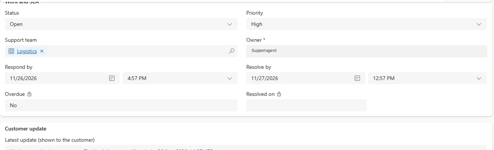

- Project deep dive
- Vink Customer Care Agent · Part 1 of 11
1 · The Dataverse data model
Where this page fits
Highlighted boxes are what this page explains. The chain runs left to right, top row then bottom row.
Everything starts with the data. The agent never stores customers or tickets itself; it reads and writes Dataverse through flows. If the tables are right, every other part becomes simpler.
From the root: tables, rows, columns
How the seven tables connect
CUST-1001, VIP flag
Repairs · Billing · Logistics
The tables and their key columns
| Table | Key columns | Why they matter |
|---|---|---|
| Contact (standard) | Email, vin_CustomerNumber (CUST-{SEQNUM:4}), vin_IsVIP | Verification and VIP priority |
| Customer Order | Order number (ORD-…), status, serial number, tracking, Product lookup | Proves identity; links tickets to purchases |
| Product | Name, SKU, price, vin_WarrantyMonths | Warranty checks |
| Service Ticket | Ticket number (TKT-{SEQNUM:4}), subject, description, AI summary, category, priority, status, source, respond by, resolve by, overdue, latest update, CSAT | The centre of everything |
| Ticket Update | Title, text, vin_VisibleToCustomer, updated by, status after | The timeline; internal notes stay hidden |
| Support Team | Name, team email, categories it handles | Routing |
| Warranty Claim | Claim number, serial, purchase date, in warranty, fault description, fault summary, RMA number | Repairs and replacements |
Autonumbers: TKT-1020 without code
A new ticket row is saved
TKT-{SEQNUM:4}Customers can say a number out loud, and the agent's TicketNumber entity can recognise it in a message (Part 3). The real row ID (a GUID) is never shown to a customer.
Choices: labels for people, numbers for flows
| Column | Values |
|---|---|
| Ticket Status | Open · Awaiting return · Scanned at warehouse · Repaired · Replaced · Closed · In progress · Awaiting customer · Escalated · Resolved |
| Priority | Low · Medium · High · Urgent |
| Category | Repair · Delivery · Billing · Returns · General |
| Source | Agent chat · Email · Phone · Staff |
The same value, two ways
| Label (what people see) | Stored value (what flows filter on) |
|---|---|
| Open | 949870000 |
| Scanned at warehouse | 949870002 |
| Closed | 949870005 |
| Resolved | 949870009 |
| High (priority) | 949870002 |
Flow filters use the numbers, for example vin_ticketstatus ne 949870005. The 94987 prefix comes from the publisher (Part 11). This is why the flows in this deep dive contain long numbers.
SLA columns: promises with a deadline

TKT-1020's SLA, in UTC and in India
| Column | Stored (UTC) | Shown in India (+5:30) | Set by |
|---|---|---|---|
| Created on | 07:27, 26 Nov | 12:57 PM | Dataverse |
| Respond by | 11:27, 26 Nov | 4:57 PM | Create Ticket flow: + 4 h (High) |
| Resolve by | 07:27, 27 Nov | 12:57 PM, 27 Nov | Create Ticket flow: + 24 h |
| Overdue | No | No | Daily SLA Check flow (Part 8) |
Dataverse stores time in UTC and the app converts it for each viewer. The chat shows UTC with the label written out, so it's never ambiguous. See Dates and time zones.
Customer-visible vs internal updates
One timeline, two audiences
vin_VisibleToCustomer = Yes?New to this? Start from the basics optional
Dataverse: the database behind Power Platform, with security, relationships and auditing built in.
GUID: the long unique ID every row has.
Common mistakes
- Showing GUIDs to customers instead of a readable autonumber.
- Filtering on choice labels instead of their stored values.
- Storing local time instead of UTC.
- One notes field instead of a separate updates table: you lose who, when and visibility.